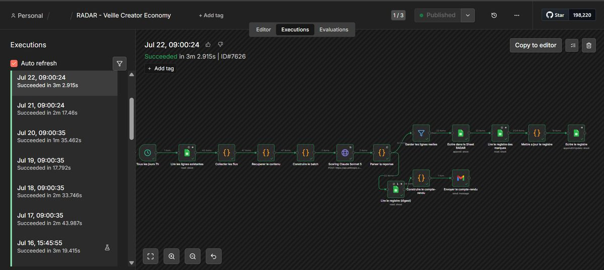
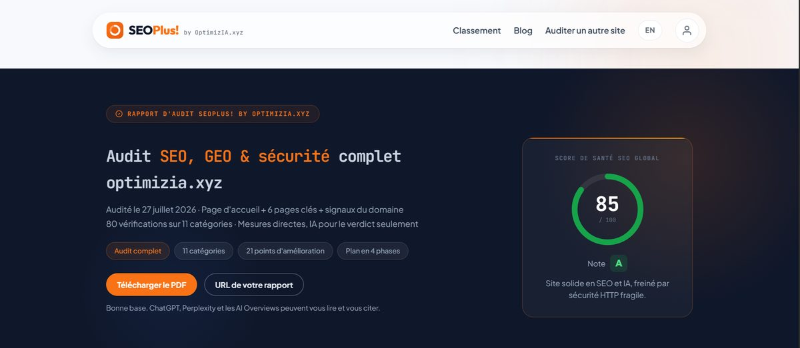
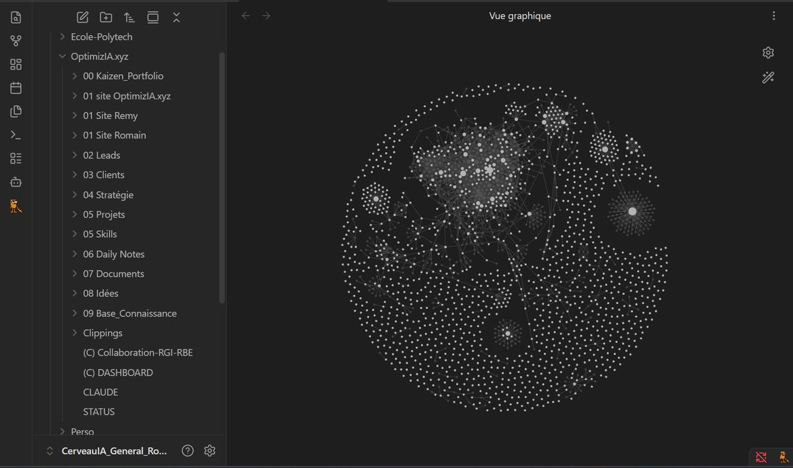

Maths appliquées, automatisation et IA. Ce sont les ingrédients principaux que j'utilise pour proposer via OptimizIA.xyz, des solutions innovantes pour mes clients ! Sept systèmes en production, du workflow de veille au SaaS avec paiement.
Sept cas concrets, du besoin exprimé jusqu'à la mise en production. Les missions clients sont décrites par secteur, sans nommer les entreprises.
Agent de veille quotidien
Mission client
Un créateur de contenu passait ses matinées à éplucher newsletters, vidéos et réseaux pour ne rien rater de son secteur.
Collecte multi-sources déclenchée automatiquement chaque nuit
Scoring de pertinence par LLM sur des critères définis avec lui
Synthèse envoyée par mail du lundi au vendredi
Workflow de surveillance qui prévient dès qu'une exécution échoue
Chaque nuit, l'agent parcourt les sources suivies par le client, note chaque élément selon des critères calibrés avec lui, puis envoie une synthèse le matin du lundi au vendredi. Un second workflow surveille le premier et alerte dès qu'une exécution échoue, ce qui rend la veille exploitable sans surveillance humaine.

Une exécution réussie par jour ouvré, avec sa durée.
n8nOpenAIGmail APIVPS
Veille livrée 5 jours sur 7, sans intervention
SaaS d'audit SEO & GEO
Produit interne
Qualifier un prospect avec une analyse chiffrée de son site plutôt qu'avec un argumentaire.
Moteur d'analyse couvrant 80 points par site
Rapport bilingue avec score, verdict et correctifs priorisés
Espace client et archivage des rapports en base
Newsletter hebdomadaire générée et envoyée automatiquement
SEOPlus! analyse un site sur 80 points techniques, SEO et sécurité, puis rend un rapport bilingue où chaque correctif est classé par priorité plutôt que listé en vrac. Il sert d'abord à qualifier un prospect avec des chiffres au lieu d'un argumentaire. C'est cet outil qui a audité ce site.

Rapport rendu en direct : score, note et plan en quatre phases.
n8nSupabasePostgreSQLBrevo
Audit complet rendu en ligne en quelques minutes
Plateforme d'abonnement
Produit interne
Transformer un service à accès manuel en produit vendable, avec un contrôle d'accès qui ne dépend pas du front.
Paiement Stripe en production, abonnements et espace client
Attribution automatique des accès communautaires après paiement
Droits décidés en base avec Row Level Security
Connexion OAuth en un clic, sans saisie de code
Le paiement Stripe déclenche l'ouverture des accès, mais la décision de qui a le droit de voir quoi se prend dans la base de données, jamais dans le navigateur. C'est ce qui fait qu'un abonnement résilié perd réellement ses accès, et pas seulement l'affichage d'un bouton.
StripeSupabasen8nOAuth2
Tunnel de vente opérationnel de bout en bout
Site vitrine & audit SEO
Mission client
Une consultante indépendante en RH et RSE partait d'un site constructeur lent et peu visible dans les résultats de recherche.
Refonte complète en HTML, CSS et JS, sans framework
Données structurées et pages légales conformes
Audit SEO et GEO livré avec un plan d'action sur 30 jours
Le site d'une consultante en RH et RSE a été reconstruit en HTML, CSS et JavaScript, sans framework, avec ses données structurées et ses pages légales conformes. Il est livré avec un audit SEO et GEO et un plan d'action sur 30 jours, pour qu'elle sache quoi faire une fois le site en ligne.
HTMLCSSJSSchema.org
Site en production sur un socle SEO propre
Tri intelligent de boîte Gmail
Automatisation
Une boîte mail saturée dans laquelle l'important se noyait dans le volume quotidien.
Classification automatique des messages à l'arrivée
Notification immédiate sur les urgences
Nettoyage planifié des catégories à faible valeur
Brouillons de réponse pré-rédigés pour les cas récurrents
À l'arrivée de chaque message, une classification décide de sa catégorie, déclenche une notification si c'est urgent et prépare un brouillon de réponse pour les cas récurrents. Les catégories à faible valeur sont nettoyées automatiquement. Le gain mesuré est de 20 à 30 minutes par jour.
n8nOpenAIGmail APIVPS
20 à 30 minutes économisées par jour
Prise de rendez-vous sur mesure
Ce site
Remplacer un outil de réservation tiers par un tunnel maison, intégré au site et branché sur mon agenda réel.
Créneaux calculés depuis les disponibilités réelles de l'agenda
Durée, battement et délai de prévenance pilotés par paramètre
Fiche contact créée ou mise à jour, sans jamais créer de doublon
Confirmation par mail et invitation visio générées automatiquement
Les créneaux proposés sont calculés depuis les disponibilités réelles de l'agenda, avec la durée, le battement et le délai de prévenance pilotés par paramètre et non codés en dur. À la réservation, la fiche contact est créée ou mise à jour sans jamais produire de doublon, et la confirmation comme l'invitation visio partent seules.
n8nGoogle Calendar APINotion APIJS vanilla
Réservation autonome, zéro saisie manuelle
Système d'information et pilotage de projet
Interne
Deux associés, plusieurs projets et clients menés en parallèle, et aucun endroit unique pour savoir qui fait quoi ni où en est chaque chantier.
Base de connaissances Obsidian partagée et synchronisée entre les deux associés
Portefeuille structuré en sprints : fiches de tâches, backlog priorisé, revue hebdomadaire
Diagrammes de Gantt, cartes de dépendances et chemin critique tenus à jour à chaque sprint
Tableaux de bord calculés depuis les fiches, et point d'avancement envoyé par mail automatiquement
Toute l'activité de l'agence tient dans une base Obsidian partagée entre les deux associés : fiches de tâches, backlog priorisé, diagrammes de Gantt et chemin critique remis à jour à chaque sprint. Les tableaux de bord se calculent depuis les fiches, et le point d'avancement part par mail tout seul.

Vue graphique du système d'information, notes et liens entre projets.
ObsidianDataviewMermaidn8n
Un seul endroit pour piloter tous les projets
Compétences
Ce que je sais faire
Six domaines qui se répondent, du calcul numérique jusqu'au système en production.
Développement
HTML / CSS / JSNext.jsTypeScriptPythonJavaC# / C
Le choix de la techno suit le besoin, pas la mode. Un site qui doit charger vite reste en HTML pur, une application qui gère des comptes et du temps réel passe sur Next.js.
Un workflow qui tourne la nuit ne vaut rien s'il tombe en silence. Chaque automatisation que je livre embarque sa reprise sur erreur et son alerte quand une exécution échoue.
Back-end & Données
SupabasePostgreSQLRLSStripeAPI REST
Qui a le droit de voir quoi se décide dans la base de données, jamais dans le navigateur. C'est ce qui fait qu'un abonnement résilié perd vraiment ses accès.
Infra & Déploiement
DockernginxVPS LinuxVercelDNS / TLS
Un projet livré est un projet en ligne. Nom de domaine, certificat, en-têtes de sécurité et cache des fichiers sont posés avec le reste, il n'y a rien à héberger après coup.
SEO & GEO
Schema.orgCore Web Vitalsllms.txtCrawlers IA
Être trouvé ne se joue plus seulement sur Google. Les pages sont écrites pour être citées telles quelles par ChatGPT et Perplexity, avec les données structurées qui vont avec.
La part du cursus qui sert vraiment en mission : estimer un coût de calcul, choisir un algorithme, comprendre pourquoi un traitement rame au lieu de le subir.
Parcours
Le parcours
Je suis en MAM4 à Polytech Nice Sophia, sur le campus de Sophia-Antipolis, spécialité Maths Appliquées & Modélisation. C'est ma 4ᵉ année dans l'école et la 2ᵉ du cycle ingénieur : j'ai d'abord fait les deux ans de prépa intégrée PeiP sur place, à me former sur les maths, l'algo et la modélisation.
En parallèle, j'ai co-fondé OptimizIA.xyz avec Rémy Ginoux, une agence d'intégration IA et d'automatisation pour les PME/ETI. Ensemble, nous collaborons sur les aspects techniques et développement : workflows n8n, agents, intégrations. Rémy apporte en plus 25 ans de terrain industriel et la vision business. Mon engagement entrepreneurial est reconnu par le Statut National Étudiant-Entrepreneur (SNEE), dispositif PEPITE du ministère de l'Enseignement supérieur.
Depuis, j'ai arrêté de faire seulement des scripts : je livre des systèmes complets qui tournent en production, avec base de données, paiement, authentification et supervision. Les cas concrets sont détaillés plus bas.
Ce que j'aime : prendre un problème concret (une boîte Gmail qui déborde, un traitement d'image à optimiser, un site à livrer, une veille à automatiser) et sortir une solution qui marche, sans sur-ingénierie, sans frameworks inutiles.
Projets académiques et sites livrés, avec le dépôt ouvert et la démo en ligne.
Covoiturage Polytech
En cours
En cours de développement avec la direction de l'école. Application de covoiturage réservée aux étudiants et personnels de l'Université Côte d'Azur. Inscription restreinte aux adresses institutionnelles, trajets récurrents, réservation passager, calcul des frais d'essence au prorata et carte interactive.
Implémentation d'un algorithme de compression inspiré JPEG, transformée en cosinus discrète sur blocs 8×8 puis stockage en matrices sparses CSR. Application Streamlit interactive avec métriques en temps réel.
Site vitrine pour une cliente photographe. Galerie soignée, design responsive, navigation fluide. Projet freelance livré en HTML/CSS/JS vanilla, sans framework.
OptimizIA.xyz est l'agence que j'ai co-fondée avec Rémy Ginoux. Nous accompagnons les dirigeants de PME et d'ETI sur l'intégration de l'IA et l'automatisation de leurs processus, à Nice, à Sophia-Antipolis et à distance partout ailleurs en France.
Ma part est technique : je conçois les systèmes et je les mets en production, du workflow n8n à l'application complète avec base de données, paiement et supervision. Une partie des réalisations ci-dessus vient de là. Rémy porte le diagnostic, la relation client et 25 ans de terrain industriel. C'est ce qui nous permet d'aller vite sans naviguer à vue.
Ce qu'on me demande souvent sur OptimizIA.xyz et mon parcours.
Romain Ben est un étudiant ingénieur en MAM4 (Mathématiques Appliquées et Modélisation) à Polytech Nice Sophia. Il est co-fondateur de l'agence OptimizIA.xyz, spécialisée en IA et automatisation pour les PME et ETI, et titulaire du Statut National Étudiant-Entrepreneur.
C'est la question la plus légitime, alors voici les faits. Sept systèmes tournent aujourd'hui en production. Les plus complets embarquent base de données, paiement, authentification et supervision, et chacun tourne au rythme prévu avec son commanditaire, du quotidien au jour ouvré, pas seulement livré une fois. Mon statut d'étudiant-entrepreneur (SNEE) est reconnu par le ministère de l'Enseignement supérieur, il encadre officiellement cette activité en parallèle du cursus ingénieur. Et je ne travaille pas seul : chez OptimizIA.xyz, Rémy Ginoux apporte 25 ans de terrain industriel et pilote le diagnostic et la relation client. Le binôme est fait pour ça, ma vitesse d'exécution technique avec son expérience des organisations.
Il suit le cursus ingénieur Mathématiques Appliquées et Modélisation (MAM) à Polytech Nice Sophia, école d'ingénieurs de l'Université Côte d'Azur. Il est en MAM4, soit sa quatrième année à Polytech et la deuxième du cycle ingénieur, après deux ans de prépa intégrée PeiP.
Développement web (HTML, CSS, JavaScript, Next.js), programmation (Python, Java, C#, C), automatisation n8n, agents LLM sur API OpenAI et Claude, back-end Supabase et PostgreSQL avec RLS, paiement Stripe, déploiement Docker sur VPS, SEO technique et GEO, modélisation mathématique et compression d'image (DCT, CSR).
Un agent de veille quotidien pour un créateur de contenu (collecte multi-sources, scoring par LLM, synthèse envoyée du lundi au vendredi). Un SaaS d'audit SEO et GEO analysant 80 points par site. Une plateforme d'abonnement avec paiement Stripe, espace client et attribution automatique des accès. Un site vitrine et son audit SEO pour une consultante RH et RSE. Un tri automatique de boîte Gmail qui économise 20 à 30 minutes par jour. Un tunnel de prise de rendez-vous sur mesure, dont les créneaux sont calculés depuis les disponibilités réelles de l'agenda. Un système d'information et de pilotage de projet, qui centralise le suivi des tâches et la base de connaissance.
OptimizIA.xyz est une agence B2B d'IA et d'automatisation co-fondée avec Rémy Ginoux (25 ans d'expérience en transformation industrielle chez Volvo, Airbus, Solvay). Nous intervenons sur trois axes : automatisation de processus métier via workflows n8n, déploiement d'agents IA personnalisés sur API OpenAI, et Knowledge Management : structuration de la connaissance interne pour la rendre exploitable par des outils IA. L'objectif : libérer +30 % de temps productif dès les premières semaines.
Notre méthode se déroule en 3 phases : un diagnostic de maturité (1 à 3 semaines), la construction d'un MVP fonctionnel en moyenne en 13 jours, puis une phase d'industrialisation à l'échelle. Le MVP permet au dirigeant de valider concrètement la solution avant tout engagement à grande échelle. Les premiers gains sont mesurables dès la mise en production.
Un workflow n8n est un enchaînement de règles déterministes : si X alors Y. Fiable, auditable, idéal pour les processus bien définis (tri d'emails, synchronisation d'outils, notifications automatiques). Un agent IA intègre un LLM capable de raisonner sur des situations non prévues, pour rédiger, synthétiser ou décider avec du contexte. Les deux se combinent souvent : le workflow orchestre, l'agent interprète.
Principalement des dirigeants de PME et ETI avec des processus répétitifs à fort volume : gestion d'emails, qualification de leads, reporting, traitement de documents. Le critère déterminant n'est pas le secteur mais l'existence de tâches manuelles récurrentes qui consomment du temps à forte valeur. Nous intervenons aussi pour des particuliers sur des projets ciblés.
Le plus simple : envoyer un email à contact@optimizia.xyz en décrivant votre contexte (secteur, processus douloureux, volume estimé). On revient sous 48h pour planifier un premier échange de diagnostic, sans engagement. Vous pouvez aussi passer directement par le formulaire sur optimizia.xyz.
Contact
Travaillons ensemble
Deux façons de me joindre selon ce qui t'amène, perso ou pro.
Échange personnel
Une question, une collaboration, un projet étudiant, un simple bonjour : fais-moi un mail.
Fais un tour sur SEOPlus!, l'outil d'audit qu'on a construit chez OptimizIA.xyz. Il analyse 80 points techniques, SEO et sécurité, et te rend un rapport avec les correctifs classés par priorité. C'est lui qui a audité ce site.